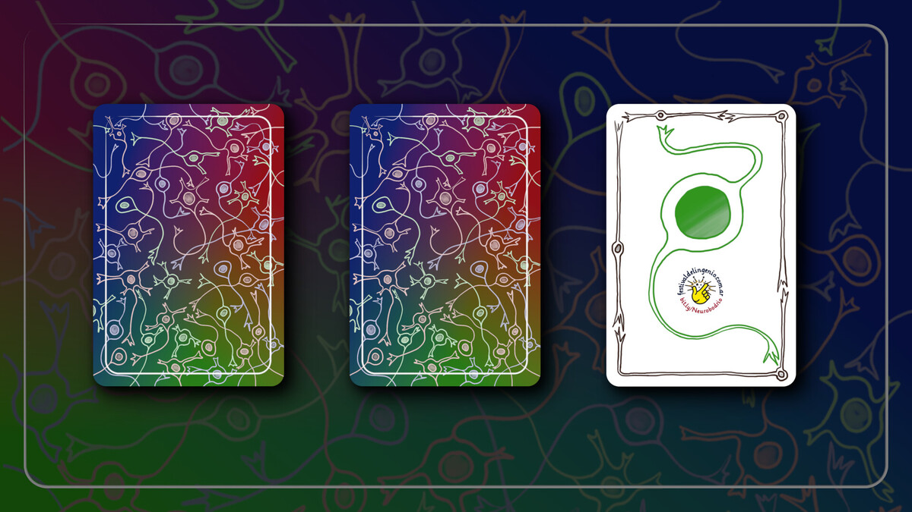
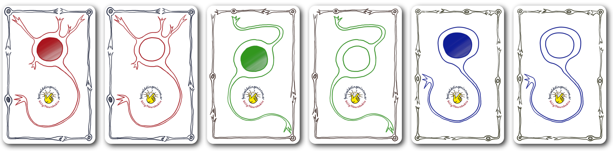

Una pieza musical estocástica para jugar en la que un grupo de personas simula ser una red neuronal que interactúa con una secuencia de fotografías.
Para jugar Neurobodrio hacen falta al menos 26 intérpretes (aunque lo ideal es que sean más de 100). Alguien deberá asumir la dirección de la obra e ir recorriendo la secuencia de fotografías de una forma que le permita al resto del grupo verlas en todo momento (proyectarlas en una pantalla parece la mejor opción). Las demás personas serán neuronas humanas. Se decidirá qué clase de neurona les toca en suerte repartiendo las cartas de una baraja neuronal diseñada especialmente.
Es necesario preparar con anterioridad la secuencia de fotografías a utilizar. Para esto alguien deberá seleccionar entre 13 y 21 fotografías de un banco de fotos y ordenarlas como mejor le parezca. La secuencia se completará con una imagen negra con el título de la obra al principio y al final, y una imagen negra lisa en la segunda posición. Si el grupo es numeroso las fotografías se dividirán en regiones que se asignarán a distintos subconjuntos de intérpretes.
Todas las neuronas tienen que repetir esporádicamente y de manera irregular un objeto sonoro asignado a baja intensidad durante toda la obra (esto simula el comportamiento real de las neuronas en reposo). Y en ciertas condiciones tendrán que aumentar la frecuencia de repetición y la intensidad de su sonido.
Las neuronas excitatorias tienen que cantar el nombre de su color organizándose por bandas de frecuencia. Las rojas cantan "rojo" con tono grave, las verdes "verde" con tono medio y las azules "azul" con tono agudo. Cuando vean su color (o un color que lo contenga) en su región de las fotografías deberán aumentar su actividad.
Las neuronas inhibitorias tienen que modular las actividad de las excitatorias. Las rojas hacen "ssshhh" con tono grave, las verdes "sshhh, sshhh" con tono medio y las azules "shh, shh, shh" con tono agudo. Deberán aumentar su actividad cuando consideren que las excitatorias de su color están respondiendo a las fotografías de manera exagerada.
Quien asuma la dirección de la obra hará visible la imagen con el título y esperará que se haga absoluto silencio. Luego irá pasando las distintas fotos de la secuencia (la primera será una imagen negra lisa) manteniéndolas activas entre 8 y 13 segundos. Las neuronas de la red se comportarán según lo indicado anteriormente y al alcanzar nuevamente la imagen con el título darán por terminada la ejecución con un aplauso.
La primera versión de Neurobodrio quedó a cargo del auditorio del 10º Festival del Ingenio, el cual tuvo lugar en el Centro Cultural de la Ciencia en octubre de 2019. El público del festival siempre está a la altura de las circunstancias y se divierte de una manera sumamente comprometida. Alcanzaron 15 minutos para explicar las reglas del juego, ensayar y estrenarlo.
A continuación tenés los enlaces para descargar los distintos materiales necesarios para preparar una versión de Neurobodrio: